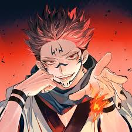

|
Ryomen Sukuna, a prominent character in Jujutsu Kaisen, is powerful ancient sorcerer who lived during the Heian era, over a thousand years ago. He is known as the "King of Curses" and is feared for his immense power and destructive nature. Sukuna's story involves his defeat by jujutsu sorcerers, his subsequent sealing into 20 cursed fingers, and his eventual reincarnation within Yuji Itadori. |